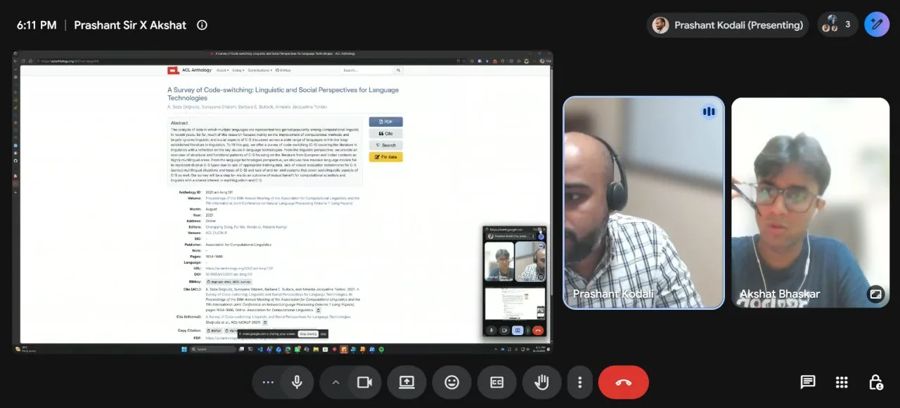

FOMO, Conscientiousness, and Financial Misinformation
A study at the Indian School of Business, under the guidance of Professor Hemant Kakkar · 2026
 ost research on misinformation stops at identifying false posts. It tells you what is wrong, but not who is susceptible to it. This study asks the second half of the question: what individual traits predict whether someone shares financial misinformation they have come across?
ost research on misinformation stops at identifying false posts. It tells you what is wrong, but not who is susceptible to it. This study asks the second half of the question: what individual traits predict whether someone shares financial misinformation they have come across?
It grew out of my work in financial literacy. I had started to see that literacy is only one part of the story. Whether someone falls for a scam, or forwards one, often has less to do with what they know and more to do with how they feel.
The question
The study tests whether fear of missing out (FOMO) and conscientiousness interact to predict financial misinformation sharing. It extends Professor Kakkar's framework on political ideology, conscientiousness, and fake news sharing into a financial context, with FOMO taking the place of ideology.
Lawson and Kakkar (2022), Journal of Experimental Psychology: General.
I emailed Professor Kakkar back in July, and he graciously agreed to guide me throughout this project on the same.
The hypothesis
The obvious prediction is that conscientious people, careful, organised, rule-following, should be less likely to spread something false. But financial misinformation in India shows up dressed in far more ways than just as an opportunity. It shows up as a warning: your bank account will be frozen, RBI just changed this rule, act now. A conscientious person's instinct is to protect the people around them, and that same instinct might be what makes them forward the warning without checking it first.
If that holds, "slow down and verify" is aimed at the wrong lever for a chunk of the people spreading this stuff. You are not fighting carelessness. You are fighting a sense of duty. That is the hypothesis I want the data to either confirm or kill.
How it works
- Conscientiousness, measured with the BFI-2-XS, a 15-item version of the Big Five Inventory (Soto and John, 2017).
- FOMO, measured with Przybylski et al.'s 10-item Fear of Missing Out scale, developed at the University of Oxford (2013).
- Five financial misinformation vignettes, each rated for how likely the respondent is to share it and how true they believe it is.
- A mixed-effects model in R, with ratings nested within each respondent.
These are established, validated instruments, already used in research on political misinformation and the psychology of FOMO.
The language side
On the content side, I am running real financial misinformation posts from Indian social media through two language models: MuRIL, which Google built specifically for Indian languages including Hindi–English code-mixed text, and XLM-RoBERTa, Meta's more general multilingual model trained across 100 languages. Most models are trained on English-dominant web text and fall apart on the way Indians write online, mixing Hindi and English in the same sentence. Comparing the two tells me whether India-specific pretraining earns its keep.
I was quite confused about how code-mixing usually works, since I am not that technical, but I have received quite a lot of help since then. I emailed Monojit Choudhury, Professor @ Natural Language Processing, MBZUAI, and he graciously connected me to Dr. Prashant Kodali, Post Doctoral Researcher @ Microsoft Research India, who works on multilingual and multicultural AI — building language technologies that serve speakers of low- and mid-resource Indian languages as well as they serve English speakers, without flattening how those communities actually talk, write, and think.
More importantly, Dr. Prashant is very relevant to my specific problem. He has directly published research involving XLM-R and code-mixed text. For example, his 2024 paper on English-Hindi code-mixing found that fine-tuned XLM-RoBERTa performed strongly on code-mixing acceptability, and his 2025 work on adapting multilingual models to code-mixed tasks explicitly experiments with XLM-R.

On a call with Dr. Prashant Kodali.
Dr. Prashant kindly agreed to a call, and our discussion focused on a key challenge in the project: reliably detecting misinformation in Hindi-English code-mixed social media content. The call helped shape the technical direction of the project. He recommended a translation-to-English baseline, discussed model and evaluation strategies, and demonstrated and subsequently shared his own token-level normalization tool (a HUGE help), which identifies language at the token level and converts Romanized Hindi into Devanagari. He also advised on constructing an evaluation set that reflects the real distribution of monolingual and code-mixed content, and shared relevant papers and a chapter from his thesis for further study.
The conversation gave me concrete preprocessing methods, model baselines, evaluation criteria, research literature, and a technical tool that I could directly incorporate into the study.
He also sent over a whole stack of documents, papers, and PDFs on code-mixing in case I wanted to go deeper, and I have been working through them since. Out of that, I am putting together a starter resource for anyone who wants to get into code-mixing: where to begin, what to read and in what order, and the tools that actually help, written for people who are not that technical either. I will make it freely available here on my website once it is ready.
Where it stands
The data collection phase is now complete, with 300 responses collected, and I am moving on to the analysis and the NLP component of the study. The raw responses are not public: human subjects data needs separate handling and advisor sign-off before anything goes out.
The study design and code live on GitHub. If you work in fintech, behavioural science, or misinformation research, I would love to talk: bhaskarakshat22@gmail.com.